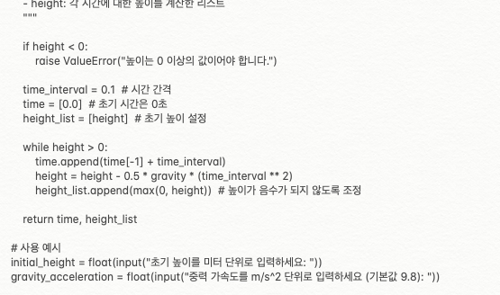
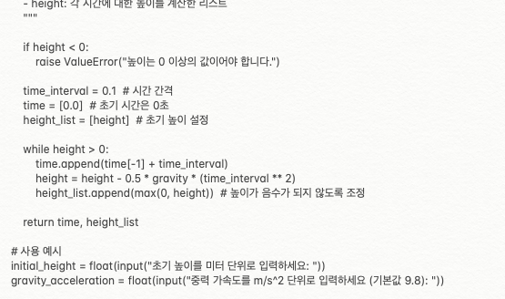

ABOUT ME
제 포트폴리오에 오신걸 환영합니다!! 저는 컴퓨터를 좋아하는 학생으로, C언어를 중점으로 공부하면서 프로그래밍과 컴퓨터 공학에 대한 지식을 쌓고 있습니다. 최근에는 C에 이어 다양한 언어와 프로그램을 개발하고 있으며 고촌고등학교 컴퓨터 동아리 '커넥트'에서 활동하고 있습니다. 또한 정보보안전문가를 꿈으로 삼고 있습니다.
제 포트폴리오에 오신걸 환영합니다!! 저는 컴퓨터를 좋아하는 학생으로, C언어를 중점으로 공부하면서 프로그래밍과 컴퓨터 공학에 대한 지식을 쌓고 있습니다. 최근에는 C에 이어 다양한 언어와 프로그램을 개발하고 있으며 고촌고등학교 컴퓨터 동아리 '커넥트'에서 활동하고 있습니다. 또한 정보보안전문가를 꿈으로 삼고 있습니다.
 
